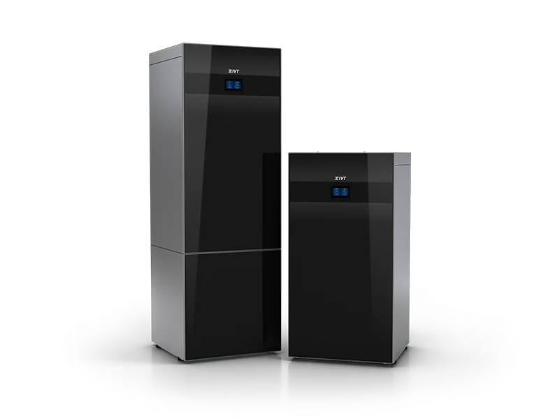

Berg-, jord- och sjövärme.
Värme från naturen. Komfort för hela hemmet.
Ta vara på energin i berget, marken eller sjön. För värme och varmvatten i hela huset.
Välj modell.
Vi hjälper dig vidare.
Utforska 4 modeller från IVT. Läs mer på respektive produktsida och ladda ned originalens produktblad.

Geo 600
Berg-, jord- och sjövärmeInverterstyrd bergvärme med jämn värmeproduktion och en intuitiv användarupplevelse.

Geo 700
Berg-, jord- och sjövärmeBergvärme med naturligt köldmedium, genomarbetad design och alternativ i vitt eller svart.

PremiumLine HQ
Berg-, jord- och sjövärmeBeprövad bergvärme med lågenergiteknik och anpassning till det befintliga borrhålet.

Greenline HE
Berg-, jord- och sjövärmeBergvärme med beprövad teknik och kapacitet för höga vattentemperaturer.
Se hur det fungerar.
Se IVT:s filmer om värmepumparna. Välj en film när du vill veta mer.

Upptäck IVT Geo 700
Filmer hämtas från IVT:s videokällor först när du väljer att spela upp dem.
Vad är skillnaden mellan jord- sjö- och bergvärme?
Det som i huvudsak skiljer dessa tre åt är var energin hämtas ifrån. Det är samma värmepumpar som används, men jordvärme hämtar sin energi från jorden, sjövärme från sjön och bergvärme från berg. Ser man på skillnaden på energibesparing för berg, jord och sjövärme så är bergvärmen det bästa alternativet. Det är dina behov och din tomt som avgör vilket alternativ som lämpar sig bäst.
Bergvärmen har högst temperatur av dem alla när det är kallt och vinter ute. Det är då husen och fastigheterna kräver som mest energi.
Varför berg-, jord eller sjövärme? Fördelar med berg, jord och sjövärme
- Ger stor energibesparing
- Inget synligt på utsidan av fastigheten
- Värmepumpen har en lång livslängd, ca 20år
- Bergvärme/borrhålet har en livslängd på ca 50-80år
- Väldigt låg ljudnivå
- Passar bra för både nybyggnationer och för gamla hus, samt för både stora och små fastigheter
Nackdelar med berg, jord och sjövärme
- Högre kostnad installera bergvärme
- Tillstånd krävs för installation av bergvärme
- Det är inte alltid möjligt att borra, exempelvis om tomten är för liten eller om avståndet till berget i marken är för långt
- Kräver vattenburet värmesystem
Vätska/vatten-värmepumpar från IVT
Dessa värmepumpar kallas också för vätska/vatten värmepumpar eftersom energin hämtas från antingen berget, jorden eller från sjöar via en så kallad kollektorslang. I kollektorslangen finns en vätska som idag oftast består av en blandning av bioetanol och vatten, men kan också innehålla en glykolblandning.
Efter det att värmepumpen hämtat upp energin från berget, jorden eller sjön så omvandlas den till värme som levereras ut till det vattenburna värmesystemet och till varmvattnet. Därav kommer namnet vätska/vatten. Värt att veta är att det är samma typ av värmepump som används för att hämta energin ur dessa olika energikällor, även om vissa mindre justeringar i inställningar kan behöva göras beroende på vilken typ av energikälla man använder sig av.
En förnybar investering
Energin som hämtas ur berget, jorden eller sjön är lagrad solvärme. Temperaturen man får från bergvärme håller sig ganska konstant på ca 2-7 grader året runt, medan temperaturen från jordvärmen varierar mer under årets gång. På vintern kan temperaturen från jordvärmen ligga på ett par minusgrader medan man på sommaren kan få upp mot 15-20 grader. Den stora variationen beror mestadels på att en jordvärmeslang placeras ca 70-100 cm ner i marken, vilken påverkas av solen på sommaren och tjälen och kylan på vintern. Vid sjövärme förankras istället en kollektorsslang på botten av sjön som utvinner energin som finns där.
Ser man på skillnaden när det kommer till energibesparingen till följd av bergvärme, jordvärme och sjövärme så räknas bergvärmen som det bästa alternativet. Energin från bergvärme har högst temperatur av de alla under vintermånaderna när det är kallt ute, och husen och fastigheterna kräver som mest energi för att hålla uppe värmen inomhus.
Bergvärme
När det kommer till installation av en bergvärmepump är det till stor del berggrunden som avgör om din tomt är lämplig för det eller inte. För att man ska kunna utvinna tillräckligt med energi måste man först och främst beräkna hur djupt och hur många borrhål som behövs. Det krävs även ett tillstånd från kommunen innan du kan påbörja borrningen.
Det absolut vanligaste sättet att utvinna energi till bergvärmepumpen är att borra ett eller flera hål ner till berggrunden och sedan använda sig av en kollektorslang där en köldbärarvätska cirkulerar och tar med sig energin från berget och sedan för med sig den till bergvärmepumpen.
För att installera bergvärme krävs också ett befintligt vattenburet värmesystem. Har du inte detta i ditt hus går det att installera ett vattenburet värmesystem, även om den ökade kostnaden för installation gör det mindre lönsamt.
Eftersom bergvärmepumpar till skillnad från luftvärmepumpar hämtar sin värme direkt från berggrunden, håller du en jämn och konstant temperatur även under årets kallaste säsonger. Uppvärmning med bergvärme kräver installation inte heller alls mycket underhåll och har väldigt låga driftkostnader, vilket gör det till en bra investering som ökar värdet på ditt hus.
Jordvärme
Genom att installera en jordvärmepump värmer du upp din bostad genom att ta tillvara på energin som lagrats i marken. För att ta tillvara på jordvärmen grävs en s.k. kollektorslang ner i marken på ca. 1 meters djup. Längden på slangen som behövs beror mestadels på fastighetens läge och storlek.
Med hjälp av en kompressor utvinner värmepumpen värmen ur marken som sedan leds vidare till husets vattensystem som varmvatten. Vätskan pumpas sedan tillbaka ut i kollektorslangen och vidare till jordvärmepumpen. Så här fortsätter vätskan att cirkulera och värmer därmed upp din bostad en väldigt lång tid. Genom att regelbundet se över den och ge den service kan livslängden hos dessa värmepumpar nå upp till 20-30 år.
Genom att installera en jordvärmepump kan du sänka kostnaden för din uppvärmning med upp till 85% och med hjälp av vätskan i slangen som grävs ner ha en jämn temperatur hemma oavsett klimat och temperatur utomhus. Andra fördelar med jordvärme som uppvärmning är att du också har en värmepump som påverkar miljön ytterst lite samt att den inte kräver något borrhål.
Sjövärme
Ett mindre vanligt alternativ till bergvärme och jordvärme är att man installerar en sjövärmepump till fastigheten. På samma sätt som för installation av en jordvärmepump, använder man sig även här av en kollektorslang som istället läggs på sjöbotten. Kollektorslangen hålls på plats på botten med hjälp av tyngder, där längden av slangen avgörs av förutsättningar såsom läget på fastigheten och husets storlek.
Med en energisnål kompressor hämtar värmepumpen värmen ur sjövattnet som sedan leds vidare till husets vattensystem. Efter detta pumpas vätskan sedan tillbaka ut genom kollektorslangen och därefter tillbaka till jordvärmepumpen. Eftersom vätskan fortsätter att cirkulera, värmer systemet därmed upp din bostad en väldigt lång tid framöver. Värmepumpen sköter sig själv efter den väl är installerad och genom regelbunden service kan du hålla uppe värmepumpens livslängd till närmare 30 år.
Genom att installera sjövärme till din fastighet kan du göra en besparing för din uppvärmning med upp till 85%, samtidigt som du också höjer värdet på huset. Eftersom du hämtar energin från vattnet får du därmed ett system som utvinner förnybar energi som lagrats på sjöbotten.
Värme med lång livslängd från IVT
När man står inför valet av energikälla faller det oftast på hur ens tomt ser ut och var den är belägen. Som exempel önskar man vid installation av bergvärme ha närhet till berg i marken. Om det är långt ner till berget från markytan kräver installationen något som kallas foderrör, ett stålrör som drivs ner i marken för att hålla undan jordmassorna innan man når ner till berget. Ett visst antal foderrör ingår alltid vid installation men skulle fler behövas, brukar en extra löpande kostnad tillkomma om avståndet till berget är långt. Jordvärme och sjövärme är däremot i regel ett billigare alternativ att installera. Dock kräver det att man har ett större markparti så att man får plats med en jordvärmeslang som för en normalstor villa är mellan 400-800 m. Sjövärme kräver även tillgång till en sjö eller vattendrag för att kunna installeras.
Livslängden hos värmepumpar av dessa slag är upp till ca 20år. Borrhål eller markanläggning har man kvar i flera generationer.